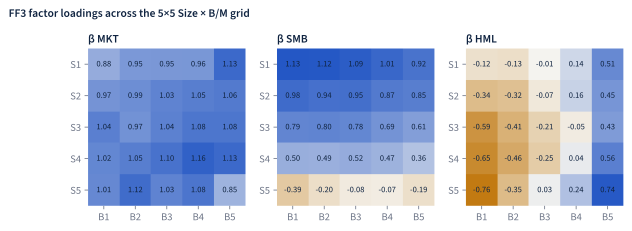
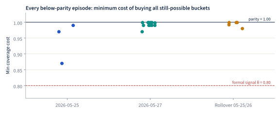

Quantitative Research
& Financial Data Science
我是陈晓康（Jerome Chen），深圳大学金融科技专业本科生。这里收录我完成的四项研究，分别涉及资产定价、市场状态识别、行为数据的异常检测，以及预测市场的盘口数据。每篇报告都写明了数据、方法、真实结果和局限；Kaggle Poker 的研究代码尚未正式公开。
阅读研究研究
- 01
A 股 Fama–French 三因子模型的构造与检验
Fama–French Three-Factor Model in China A-Shares
平均调整 R² 68.8% → 93.3%；FF3 显著 α 未校正 / Holm / BH 为 5 / 0 / 2。GRS p = 0.052350；H1–H4 数据限制仍保留。
阅读报告 →
- 02
Hamilton (1989) 马尔可夫状态转换：复现与跨资产扩展
Markov Regime Switching: Hamilton (1989) and Beyond
GNP 131 期条件似然；论文历史基准 7 次峰谷；跨资产共同周 753 期。月频 S&P 500 尚未通过数据验收。
阅读报告 →
- 03
扑克条件行为模型与证据排序研究
Detecting Coordinated Value Transfer in Poker
赛后已研究 Development 严格五折：Pair AP 0.930574、Behavior MAP 0.871213、Evidence MAP@5 基线 0.282754；历史异构选择程序的 Evidence MAP@5 为 0.512723。最终统一 H1-D+H2-C1 已完成无标签推理，尚无独立 Evaluation 成绩。
阅读报告 →
- 04
Polymarket 天气市场：覆盖成本监测与信号可执行性
Coverage and Executability in Polymarket Weather Markets
覆盖成本低于 1 的情况共出现 20 段，最低 0.87，但没有一次低于 0.80 的正式信号阈值；按盘口第一档挂单量计算，单段最大毛利只有 0.07 美元。真正的瓶颈是数据可用性：最差的一天有 93% 的快照无法计算。
阅读报告 →
研究原则
FF3 的固定财报滞后尚不能认证历史版本可得性，已在审计和正文中披露；Poker 的正常行为基线排除对手底牌和未来公共牌。
FF3 的 R² 很高，但 SMB、HML 的溢价在 89 个月里并不显著，GRS 也处在 5% 的边界，两件事都要写出来。
Poker 的赛后研究按 400 张桌子划分严格五折，隔离训练祖先；未标注的配对不当作确定负样本。
Hamilton 复现同时对照原文、原作者程序输出和 statsmodels，手写 filter 用穷举路径验证。
源码与数据
已公开研究的 Notebook、源码、输出表和说明文档位于压缩包的 research-projects/ 目录中。原有网站图表由 scripts/build_figures.py 从输出表生成；Kaggle Poker 新增研究图取自六阶段验收交接包，其代码与报告暂不提供公开下载。
CSMAR 属于商业授权数据库，Kaggle 竞赛数据受比赛规则约束，这两类数据都没有随附；其余公开数据已随附，并注明了来源。